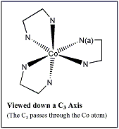

|
|
B. The Symmetry Properties of Metal Tris Chelates
1. With Symmetrical Chelating Ligands: Molecules of D3 Symmetry
a. The C3 Operations
Example with one isomer of the Co(H2NCH2CH2NH2)33+ Ion More Information
This molecular ion has D3 symmetry and the following symmetry operations:
E, C3, C32, and 3 C2's
a. First we will animate the C3 Operations
Useful commands for viewing the operations:
Animation of the C3 Operations:
1. The C3
2. The C32
3. The The C33 = E
Notice the C33 is the same as the identity (E) and is therefore not unique and is therefore NOT listed as a symmetry operation for this molecular ion.
b. Next we will look at the C2 Operations
|